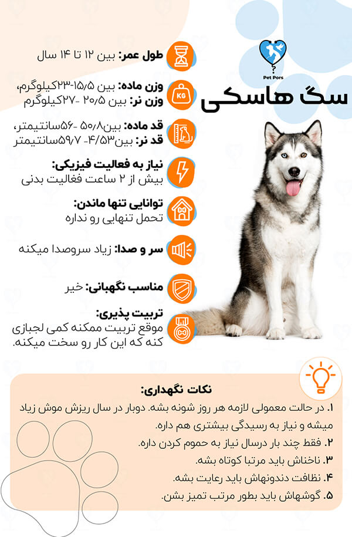
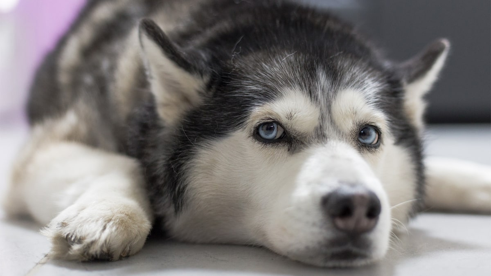
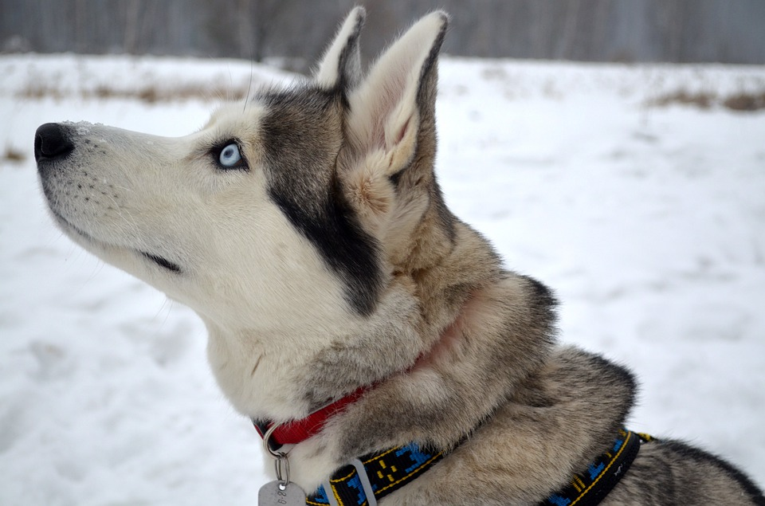
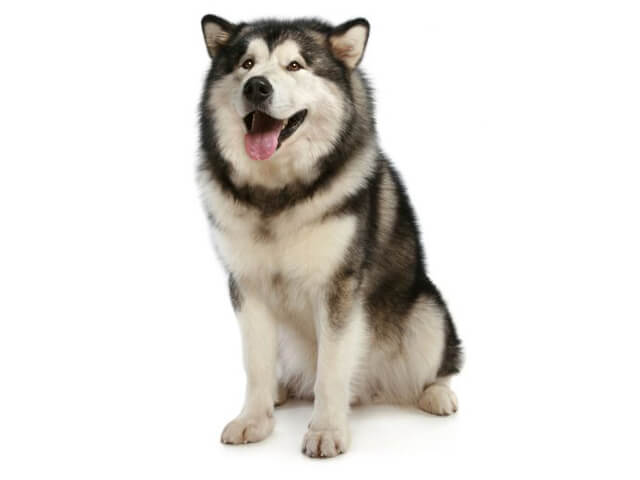
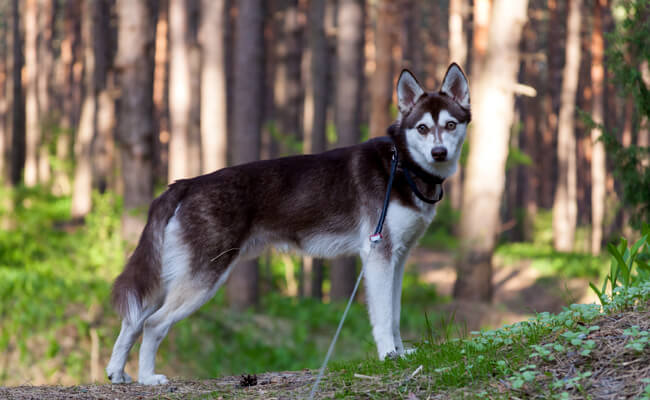
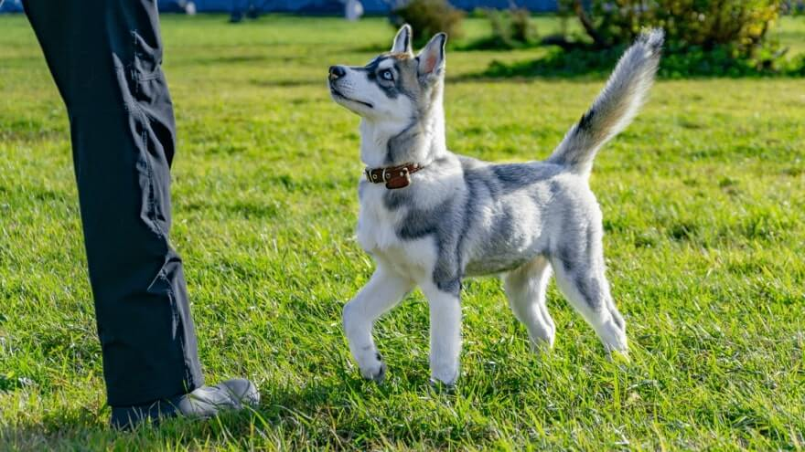
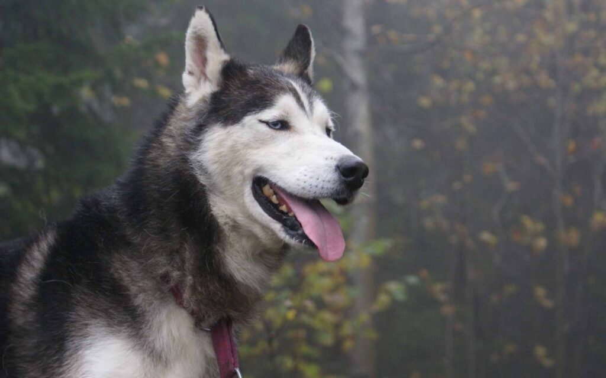
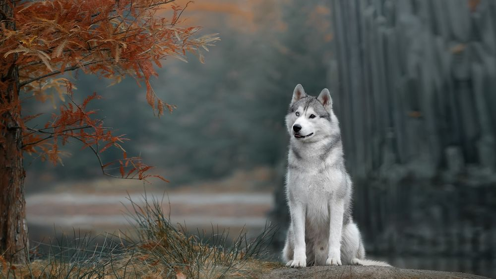

یکی از نژادهای محبوب و پرطرفدار تو دنیا، سگ هاسکی هست. سگی با چشمهای آبی رنگ و البته ظاهر شبیه گرگ، که باعث شده توی نژادهای سگ خیلی خاص به نظر بیاد. البته این نژاد یکی از محبوبترین انواع نژاد سگ موجود در ایران محسوب میشه. این سگ به همراه مالاموت و ساموید جزو سگهای نژاد سورتمه کش بهحساب میان. در ادامه با پت پرس همراه باشین تا همه چیز درباره سگ هاسکی سیبرین بدونین؛ اینکه تاریخچهاش چیه و چه ویژگیهایی داره و اصلا چطور باید ازشون مراقبت کرد.


ویژگی های سگ هاسکی
- جالبه بدونین که اسم این سگ از ناحیهای در شرق سیبری گرفته شده، جایی که ازشون به عنوان سگ سورتمه استفاده میشده.
- نژاد سگ هاسکی سفید سیبرین به ظاهر جذاب و زبیاش معروفه.
- سگ گرگی هاسکی بخاطر مقاومت بدنی بالا و ظاهر زیباشون در سراسر دنیا محبوبیت داره و ازشون به عنوان سگ خانواده و سگ همراه استفاده میشه.
- این نژاد سگ، ورزشکار و گوش به زنگ هستن و از بودن کنار سگهای دیگه لذت میبرن و دوست ندارن تنها بمونن.
- به هیچ وجه برای کسانی که تاحالا سگ نداشتن انتخاب مناسبی نیستن؛ چون نیاز به صاحبی دارن که با ویژگیهاشون آشنا باشه و بدونه چطوری باید بهشون آموزش بده و تربیتشون کنه.
- بالا بودن سطح انرژی و مستقل بودن، ۲ تا از ویژگیهای بارزشون به حساب میاد. به شدت نژاد بیش فعالی هستن و برای اینکه بدرفتار نشن باید تخلیه انرژی انجام دادن رو در موردشون جدی بگیرین.
با بچهها و مهمانها رابطه خوبی دارن و دوستای خوبی برای اونا به حساب میان
سگهای ذاتا معاشرتی هستن
همیشه بازیگوش میمونن حتی اگه سنشون بالا بره
با محیط اطراف انطباق پذیرن و خوب خودشون با شرابط جدید وفق میدن و وقتی با شرایط جدید روبرو میشن عصبی نمیشن و نمیترسن
یکی از انواع نژاد سگ هست که زندگی رو بسیار راحت میگیرن و خیلی زود همه دلخوریهاشون رو فراموش میکنن
بر خلاف بعضی نژادها، سگ هاسکی سیبری بوی بد نمیده و اصلا نیاز نیست براش بادی اسپلش بگیرین.
ذاتا سگهای اجتماعی هستن و با سگهای دیگه به خوبی کنار میان
برای کسانی که تاحالا سگ نداشتن انتخاب مناسبی نیست!
هرچند این نژاد توی لیست خطرناک ترین سگهای دنیا قرار داره ولی این نژاد هیچ وقت سگ نگهبان خوبی نمیتونه باشه، به این دلیل که معمولا با افراد جدید و تازه وارد ارتباط خوبی میگیره.
خصلت وفادار بودن جزو ویژگیهای این نژاد نیست؛ چون از بودن در کنار همه لذت میبرن
غریزه شکار بسیار بالایی داره برای همین باید چهارچشمی مراقبشون باشین
نمیشه با حیوانات کوچکتر و چهارپایان تنهاشون گذاشت
سگهای مطیعی نیستن و دلیلش استقلال ذاتیشونه
عاشق زوزه کشیدن هستن و زیاد پارس نمیکنن، اما با این حال گزینه خوبی برای زندگی آپارتمانی نیستن
این نژاد به فعالیت بدنی شدیدی نیاز داره
اگر سیبرین هاسکی رو مدت زیادی تنها بذارین شروع به خراب کردن محیط اطرافش میکنه
به راحتی مبتلا به اضطراب جدایی میشن
دیده شده گاهی اوقات باغ و باغچه رو خراب کردن. کلا علاقه زیادی به این کار دارن
دستگاه گوارش هاسکیها نمیتونه غلات رو به راحتی هضم کنه برای همین مراقب نوع غذایی که میخورن باشین
سگ husky در طول سال ریزش موی زیادی داره و این ریزش مو در فصل بهار و پاییز خیلی بیشتر هم میشه
علاوه بر این، به داروهای خاصی هم حساسیت دارن
آیا این سگ برای من مناسبه؟
ویدیو زیر رو میتونین از اینجا در کانال یوتیوب پت پُرس مشاهده کنین. (با قند شکن وارد بشین😉َ)
مشاهده ویدیو در کانال یوتیوب پت پُرس
تاریخچه و معرفی نژاد هاسکی سیبرین
نژاد هاسکی اصیل اولیه اهل سیبری هستند، منطقهای که به سرمای جان فرسا مشهوره. مردم اون منطقه برای طی کردن مسافتهای طولانی با سورتمه از اونا استفاده میکردن و باهاشون رفتار دوستانهای داشتن. بهتره اینطوری بگیم که این سگ در کنار اسکیموها با هماهنگی کامل و به خوبی و خوشی زندگی میکردن. اونها برای زنده موندن در شرایط سخت سیبری به وجود هم نیاز داشتن.
جالبه بدونید در افسانههای این منطقه و در باور مردم سیبری، این سگ حاصل ازدواج گرگ و ماه هست. ظاهر گرگ مانند و دم منحنی شکل شبیه هلال ماه، پایه و اساس این باور قدیمیه.
در اوایل قرن بیستم این نژاد توسط یک تاجر خز روسی برای شرکت در یک مسابقه سورتمه سواری ۶۵۳ کیلومتری به آلاسکا برده شد. هاسکی سیبری بعدها در سال ۱۹۶۶ به رسمیت شناخته شد؛ اما محبوبیت این نژاد بعد از پخش انیمیشن معروف بالتو Balto در سال ۱۹۹۵ خیلی زیاد شد.
امروز این نژاد با شخصیت مهربان، ظاهر دوست داشتنیشون به یکی از محبوب ترین نژادهای سگ همراه و خانواده در دنیا تبدیل شدن.

خلقوخو و خصوصیات سگ هاسکی
- سگهایی باهوش، مستقل و تا حدودی لجباز هستن.
- این سگها عاشق صاحبش و اعضای خانواده هستن اما لازمه که از همون تولگی به طور صحیح آموزش ببینن.
- اونا برای کشیدن سورتمه و دویدن تربیت شدن، به همین دلیل انرژی بالایی دارن و به نیاز به فعالیت روزانه زیادی دارن.
- سگ خانگی هاسکی با سگهای دیگه رابطه خوبی دارن، به خصوص اگه از بچگی با هم بزرگ شده باشن.
- این نژاد سگ مخصوصا در هوای گرم عادت به چاله کنی دارن، تا جای خنکی تو زمین برای خودشون درست کنن.
- این سگها زیاد اهل پارس کردن نیستن اما بیشتر عادت به زوزه کشیدن دارن.

سگ های شبیه به هاسکی
هاسکیها جزو سگهای نژاد اشپیتز به حساب میان و به خاطر همین سگهای زیادی هستن که شبیه این نژادن. نژادهای مختلفی وجود دارن که از نظر ظاهری و رفتاری خیلی شبیه این نژاد هست که شامل نژادهای زیر هست:
مالاموت
مالاموت یکی از قدیمیترین نژادهای سگ سورتمه در قطب شمال هست و جثه بزرگتر و وزن بیشتری هم نسبت به گونههای دیگه داره. اسم مالاموت در واقع از نام یکی از قبایل شمال غربی آلاسکا یعنی (Mahlemiut) گرفته شده. این نژاد علاوه بر کشیدن سورتمه، برای شکار شیر دریایی، فک و پرت کردن حواس خرسهای قطبی هم استفاده میشدند.
یه نژاد به نام مالاموت آلاسکایی وجود داره که منشاء اش با هاسکی مشترکه و یه جورایی پسر عموی اون حساب میشه. این دو نژاد از لحاظ ظاهر خیلی به هم شباهت دارن.

هاسکی آلاسکایی
سازمان کنل کلاب دو نوع هاسکی رو به رسمیت شناخته: هاسکی سیبرین و مالاموت. اما این بین گونه دیگهای به نام هاسکی آلاسکایی هم وجود داره که با دو گونه دیگه تفاوتهای ظاهری و رفتاری متفاوتی داره؛ به همین دلیل به عنوان یکی از انواع این نژاد محبوب شناخته میشه. هاسکی آلاسکایی معمولا چشمهایی قهوهای رنگ، پاهایی بلند و بدنی کشیدهتر و همینطور گوشهایی پشمالوتر نسبت به گونههای دیگه داره. این گونه سرعت و چابکی بیشتری نسبت به انواع دیگه داره.

سگ هاسکی مینیاتوری
سگهای میناتوری چندسالی هست که طرفدارای زیادی پیدا کرده و هاسکیهای مینیاتوری هم از این قاعده مستثنی نیستن. این سگها همون سگهای سیبرین هاسکی هستند ولی جثه و وزن کمتری نسبت به اونها دارن. این گونه از سگ از ترکیب نژادی سگهای هاسکی با جثه کوچکتر در دهه ۹۰ میلادی به وجود اومده و هدف به وجود آوردن سگی با مشخصات و ظاهر هاسکی سیبرین اما ظاهری کوچکتر و فانتزیتر بوده. هاسکی مینیاتوری اصیل که به اسم مینی هاسکی هم شناخته میشه ۳۰ تا ۴۰ سانتیمتر قد داره و وزنش هم بین ۶ تا ۱۱۵ کیلوگرمه.

لابرادور هاسکی
این سگ در واقع یه نژاد میکس یا کراسه و همونطور که از اسمش پیداست، میکس سگ لابرادور و هاسکی هست.
سگ پامسکی
این سگ هم یک سگ کراس و میکس هست که از ترکیب ۲ نژاد هاسکی با پامر یا سگ پامرانین بوجود اومده و خیلی ظاهر زیبا و فانتزیای داره.
علاوه بر این، نژادهایی هم هستن که از نظر ظاهری و ویژگیهای رفتاری شبیه هاسکی هستن. اما این سگها نژادهای جداگانهای دارن. این سگها شامل:
هستن.
حقایقی جالب در مورد نژاد هاسکی اصیل
اسمهای دیگه این سگ، چوکچا (Chukcha) و سیبه (Husky Sibe) هست.
هاسکی اصیل یکی از مقاومترین نژادهای سگ در دنیاست. اونها استاد فرار از زندان هستن!
با اینکه سگ سیبرین هاسکی ظاهری شبیه به گرگ داره ولی از نظر ژنتیکی همونقدر با یه گرگ شبیه که یه سگ پودل عروسکی یا تریر!
با شیوع بیماری دیفتری در آلاسکا در سال ۱۹۲۹، برای ارسال داروهای ضد دیفتری از تیمی از هاسکیهای اصیل سورتمه کش استفاده شد. رهبری این تیم رو سگی به اسم بالتو به عهده داشت تا داروها رو به آلاسکا برسونه و مردم اون منطقه رو نجات بده.
در آن سالها این سگ جان خیلی از مردم آلاسکا نشین رو نجات داد. یه همین دلیل سالها بعد، برای تشکر و قدردانی از کار بزرگ این سگ، مجسمهای اون توی یکی از پارکهای شهر نیویورک قرار دادند.

مهم ترین نکات در تربیت توله این نژاد
تربیت این نژاد یکی از مهم ترین اقداماتیه که باید حتما از زمان تولگی جدی گرفته بشه. اگه تربیت این سگ از تولگی جدی نگیرین، در بزرگسالی سگهایی لجباز، خودسر و دارای انواع مشکلات رفتاری میشن که صاحبانشون رو اذیت میکنن.
پس اولین موردی که باید بدونین اینه که بهجا و بهموقع بصورت صحیح بهش آموزش بدین.
آموزشهای سگ در ابتدا با تنها گداشتن توی خونه شروع میشه و در مراحل بعد سراغ آموزش دستشویی و تعیین قوانین خانه میشه. در نهایت هم باید یاد بگیره که رئیس کیه و کی دستور میده. آین آموزشها در طول زندگی سگ ادامه داره و پایانی نداره.
اگه نمیدونین توله هاسکی خودتون چطوری باید تربیت کنین، نگران نباشین. راه حل به دست آوردن اطلاعات صحیح هست. برای همین ما در تیم پت پرس پکیج ۰ تا ۱۰۰ تربیت سگ هاسکی رو آماده کردیم و بهتون آموزش دادیم که در چه سنی، چه آموزشهایی رو به سگتون بدین که از همون تولگی یه سگ خوش رفتار و تربیت شده رو داشته باشین و از بودن کنارش لذت ببرید😊😊
برای تربیت سگ هاسکی آلاسکایی:
- از تولگی شروع کنید.
- در آموزش به هاسکی آلاسکایی مصمم و قاطع باشید.
- حتما روزی ۱۵ دقیقه برای آموزش به سگ زمان بگذارید.
- با سگ برخورد و رفتار صحیح رو انجام بدید
- دوران طلایی اجتماعی سازی سگ رو که ۲ تا ۴ ماهگی هست جدی بگیرید (چک لیست اجتماعی کردن سگ فراموش نشود )
- به زندگی سگ نظو و قانون ببخشید
- از تولگی چالش هایی رو برای سگ تعیین کنید
عمر سگ هاسکی چقدره؟
عمر سگ تا حدود زیادی به نوع تغذیه و رژیم غذایی و مراقبتهای بهداشتی و فاکتورهای دیگه بستگی داره. اما به طور کلی نژادهای هاسکی سیبرین و آلاسکایی به طور متوسط ۱۲-۱۵ سال و سگ مالاموت ۱۰-۱۲ سال عمر میکنن.
قیمت سگ هاسکی چقدره؟
نژاد هاسکی در چند سال گذشته به شدت محبوب شده و متقاضیان زیادی پیدا کرده. فیمت این سگ ممکنه نوسان قیمت داشته باشه و همه جا یکسان نباشه. به طور متوسط، قیمت سگ هاسکی در ایران حدود ۴ تا ۸ میلیون تومانه.
آیا درسته که سگ هاسکی ۱ ماهه را بخریم؟
با توجه به استقبال زیاد افراد از سگ هاسکی خیلی از پرورشدهندههای سودجو اقدام به فروش توله سگ هاسکی زیر ۲ ماه، یک ماهه و حتی چند روزه میکنن.
این کار اولا برای توله سگ ضرر داره و دوما اصلا اخلاقی و انسانی نیست. چون توله های تازه متولد شده حداقل تا ۲ ماه اول رو باید پیش مادرشون باشن و از شیر مادر تغذیه بشن. تنهاترین و بهترین منبع غذایی توله سگ ۱ تا ۲ ماهه شیر مادرشه و تولهای که شیر مادرشو خورده باشه به سگ بزرگسال سالم و قوی تبدیل میشه.
پس اگه واقعا سگها رو دوست دارین بهتره کمی صبر کنین تا بشه اونا رو از مادرشون جدا کرد. ما توی پت پرس ازتون میخواهیم که توله زیر ۲ ماه رو نخرید. گول فروشندههای سگ سودجو رو نخورین تا بفهمن که این کارشون اصلا انسانی نیست و این فرهنگ باید جا بیوفته.

نگهداری از سگ هاسکی در ایران
به دلیل بعضی از ویژگی های منحصر به فرد این نژاد، دونستن طرز نگهداری درست از Chukcha خیلی مهم و اساسیه.
این نژاد سگ برای دویدن های طولانی مدت در شرایط آب و هوایی سرد به وجود اومده
یعنی:
- پوشش بدنشون ضخیمه و نیاز به رسیدگی داره.
- سطح انرژی بالای این نژاد باعث شده که نیاز به فعالیت بدنی شدید بخوان داشته باشن.
با اینکه نگهداری از چوکچا نسبت به خیلی از نژادها دشوار تره ولی میتونن تبدیل به سگهای خوبی برای صاحبشون بشن.
خبر خوب برای ایرانیهای عاشق هاسکی اینه که، هرچند ای نژاد متعلق به مناطق سردسیر هست اما میشه در مناطق معتدل مثل ایران هم از اون ها نگهداری کرد. اما در فصل تابستان که هوای اکثر مناطق ایران گرم میشه، بهتره شرایط خوبی براشون محیا کنین.
پیشنهاد میکنم مقاله نگهداری هاسکی مطالعه کنین. ما توی این مقاله درباره نگهداری هاسکی و همینطور نگهداری از اونا توی آب و هوای گرم تابستان به صورت کامل توضیح دادیم.
فعالیت روزانه و تخلیه انرژی
Husky ها سگهای بسیار پر انرژی و باهوشی هستن و به همین دلیل برای شاد و خوشحال موندن، نیاز به فعالیت فیزیکی و ذهنی زیادی دارن.
یه هاسکی خسته، یه سگ خوشحاله!!
برای داشتن یک سگ خوشحال باید:
هر روز روزی حداقل ۲ ساعت صبح و شب شرایط فعالیت بدنی شدید و درگیری ذهنی رو برای سگتون فراهم کنید:
- ۸ کیلومتر پیاده روی
- بازی های بدنی خسته کننده مانند توپ بازی
- جلسات آموزشی در طول روز (شامل آموزش فرامین مقدماتی و پیشرفته)

غذای سگ هاسکی مالاموت و سیبرین
توصیه دامپزشک:
برای تغذیه هاسکیتون پیشنهاد میدیم که از غذای خشک و کنسرو سگ که از اصالتش مطمئن هستین استفاده کنین. غذاهای تجاری اصیل توی بازاز کمه و باید دقت کنین و سعی کنین از فروشگاههای معتبر خرید کنین.
این غذاها با توجه به سن هاسکی شما در مدلهای مختلفی تولید شدن که مواد اولبه اونا براساس نیاز روزانه سگ شما تنظیم شده. با خرید غذای اورجینال خیالتون راحته که مواد غذایی مورد نیاز به بدن سگتون میرسه.
این مواد غذایی هستن که به سگ شما کمک میکنن رشد و نمو اش رو کامل کنه، انرژی بدنش تامین بشه و بتونه به زندگی خودش ادامه بده. برای اینکه در مورد تغذیه صحیح این نژاد بیشتر بدونید مطلب غذای سگ هاسکی رو مطالعه کنید.
توی این مقاله درباره تغذیه این نژاد به طور کامل توضیج دادیم. فقط نکته مهمی که باید رعایتش کنین اینه که باید به توله هاسکی حتما غذای مخصوص توله سگ و به سگ هاسکی ۱ ساله و بزرگتر هم غذای مخصوص سگ بالغ و بزرگسال بدین.
تغذیه مهمترین عامل تو سلامت سگ شماست. شاید باورتون نشه اما ۷۰ درصد بیماری های سگ به خاطر تغذیه نامناسب و غلطه. به خاطر همین میگیم که باید روی تغذیه سگ حساس باشین و هر غذایی رو بهش ندین.اگه تغذیه و سلامت سگتون براتون مهمه ما توی پت پرس خدمت مشابهی رو ارائه میدیم. کارشناس دامپزشکی و تغذیه پت پرس برنامه غذایی مخصوص سگ شما رو با درنظر گرفتن ویژگیهای اونا تنظیم میکنن.
بیماریهای رایج سگ هاسکی
بدون شک صاحبان سگهای دوست داشتنی هاسکی، روی سلامتی و بهداشت سگشون خیلی حساس هستن؛ چرا که دوست ندارن حتی یک روز هم این همخونه عزیز و بامزشونو بیحال و ناراحت ببینن.
این نژاد هم مثل تمام سگهای دیگه ممکنه روزی بیمار بشن و اقدام به موقع برای درمان میتونه خیلی از پیشآمدهای ناگوار جلوگیری کنه.
خیالت راحت ما این راهو بلدیم و در ادامه مقاله میخوایم در مورد بیماریهای رایج husky باهاتون صحبت کنیم.
بیماریهای دندان و لثه
بیماری دندان بین سگها بسیار رایجه اما در نژاد هاسکی این بیماری بیشتر از سایر نژادها دیده میشه. جرم دندان و به دنبال اون عفونت دندون و لثه میتونه دندانشون کاملا از بین ببره و در نتیجه بیماریهای کلیه، کبد، قلب و مفاصل برای سگ ایجاد کنه.
بهترین روش برای پیشگیری از بیماری دندان تمیز نگه داشتن اوناست. اگر هنوز بلد نیستی که چه جوری این کارو انجام بدی، میتونی از دامپزشک آنلاین پت پرس کمک بگیری.
بیماریهای پوستی
مشکلات پوستی با لکهای قرمز و یا پوسته شدن روی بدن هاسکی خودشونو نشون میدن که اغلب بر اثر کمبود مواد مغزی به وجود میان. دامپزشکان با دیدن لکهای پوستی، معمولا آزمایش خون رو در ابتدای درمان پیشنهاد میکنن و بعد با رژیم غذایی مناسب و دارو این بیماری رو درمان میکنن.
مشکلات بینایی
۱۰ درصد هاسکیها در سن بین شش تا دوازده ماهگی دچار آب مروارید میشن که اگر به موقع درمان چشمها انجام نشده ممکنه در سن ۲ سالگی بینایی خودشو به کل از دست بده و کور بشه؛ پس چکاپ بینایی یادتون نره.
انواع عفونتها
چوکچاها با توجه به محل زندگی و نوع تغذیه مصرفی روزانشون ممکنه دچار باکتری و یا عفونت بشن. عفونتهای گوارشی در اونا کاملا رایجه و علائم بیماری ضعف بدنی، تب، استفراغ و … هستش که اگر هر کدوم از این علائم رو دیدید؛ سریع با دامپزشک مراجعه کنید. اگر دسترسی به کلینیک دامپزشکی نداشتید، میتونید با یه دامپزشک آنلاین مشورت کنید تا بتونید به موقع درمان رو شروع کنید.
چاقی در این نژاد
اگر هاسکی شما دچار چاقی بشه بیماریهایی مثل بیماری قلبی، گوارشی، اختلالات متابولیکی، مشکلات مفصلی و … میشه که اگر به موقع درمان نشه قطعا سبب مرگشون میتونه بشه. رژیم غذایی مناسب و اختصاصی با توجه به وزن، سلامت بدنی و … میتونه کمک کنه تا از چاقی سگ جلوگیری بشه.
فلج حنجره
سگهای هاسکی سیبرین مسن ممکنه به این بیماری مبتلا بشن. این بیماری موجب تنفس سخت در سگ میشه. یکی از علائم این بیماری، تنفس پر سر و صدا هست. اگر حس کردید تنفس سگتون سنگین هست سریعا با دامپزشک مشورت کنید. تا با تحویز دارو و مراقبتهای خانگی روند درمان خیلی زود شروع بشه .
فشار خون بالا
این بیماری هم مانند فلج حنجره یکی از شایعترین بیماریهای سگ سیبرین هاسکی هست و تو این نژاد بیشتر دیده میشه. فشار خون بالا؛ موجب سکته مغزی و کور شدن سگ میشه. با چکاپهای به موقع و اندازه گیری مرتب فشار خون، و در صورت نیاز مصرف دارو با تجویز دامپزشک این بیماری قابل درمان هست.
نظر شما چیه؟
خوب توی این مقاله به صورت کامل در مورد سگ هاسکی سیبری توضیح دادیم. اینکه اصالتشون به کجا برمیگرده، تاریخچه اونا چیه و نگهداری ازشون چه چالشهایی داره. تا حالا هاسکی داشتید؟ به نظرتون نگهداری ازشون سخته یا آسون؟ چه تجربهای در مورد نگهداری از این سگهای زیبا دارید؟ لطفا برای ما کامنت بگذارید و نظر و تجربیات خودتون رو با ما و دیگر خوانندگان به اشتراک بگذارید.
منبع: سایت AKC

سلام ممنون از سایت فوق العاده شما میخواستم بدونم پت شاپ رابینسه برای خرید معتبر هست
سلام دوست عزیز،
بله معتبره.
سلام خسته نباشین من میخام یه هاسکی تهیه کنم سنش هم خوبه انگاری ۳ یا ۴ سالشه ولی میخام بدونم میتونم تو پارکینگ نگهش دارم؟؟ پیاده روی هاشم میبرمش با بازی هاش سابقه سگ داری هم نداشتم ولی اندازه سنم خیلی خوب درباره سگ ها میدانم پارکینگمون کوچیک نی ولی خوب یکم تاریکه میتونم به یه گوشه ببندمش بعد از ظهرا ببرمش بیرون و بعد بیارمش خونه؟؟
لطفا راهنمایی کنید
سلام نوید عزیز،
نژاد هاسکی مناسب نگهداری در محیط جدا از شما نیست.
سلام خسته نباشین .
من میخوام یه سگ هاسکی بگیرم و حسابی بهش برسم. ببرمش بیرون. غذای به وقت. حفظ سلامتیش و بهداشتش. بازی باهاش.
از سایت های دیگه که بررسی کردم نوشته بودن که سگ ها میتونن بیماری رو انتقال بدن و باعث میشه باهاش درگیر بشین و هزار تا خرافات که من باورشون ندارم چون اخه اگه قرار بود سگ ها بیماری رو انتقال بدن چرا براش واکسن میساختن؟
میخواستم بدونم این حرف هایی که سگ ها بیماری منتقل میکنن صحت داره؟ اگه صحت داره میشه با تمیز نگهداشتنشون و بردنشون به دامپزشکی و زدن واکسن اینا برطرف بشه؟
سگ حیوان خداست چرا باید مریضی انتقال بده؟
سلام مجتبی عزیز،
تعدادی بیماری مشترک بین حیوونا و انسان وجود داره که با رعایت نکات بهداشتی،چک آپ دامپزشکی (خصوصا اولین بار بعد اینکه رسید به دستتون) واکسیناسیون به موقع و فراهم کردن محیط و تغذیه مناسبشون به حداقل میرسن.
ببخشید هاسکی تو یک اپارتمان ۱۱۰ متری با پیاده روی روزانه و ورزش و بازی میتونه زندگی کنه البته ما هزینه هاش هم میتونیم بدیم اما فقط سوال اینکه می تونه با این شرایط زندگی کنه یا نه ؟ ؟ ؟ ؟ ؟ ؟ ؟ ؟ ؟
سلام کیمیا جان،
بله میتونه.
من عاشق سگ هاسکی هستم ولی خانواده علاقه ای ندارن که اون سگ رو بخرم ولی من عاشقشم
سلام من میخوام یه توله هاسکی بخرم از نظر جاشو اینا همه چیش اوکیه فقط ۲ تا نکته هست اینکه میگن اب دهنش زیاد میریزه میخواستم بدونم درسته این حرف و اینکه موهاش میریزه امکانش هست که ریزش موهاشو کم کرد؟ ممنون میشم اگه پاسخ بدید
سلام فرهاد عزیز،
بهتره حیوونا به سرپرستی گرفته بشن تا خریداری.
هر سگی ریزش بزاق داره یه نژادی بیشتر یکی کمتر. خیر این یه خصوصیت نژادی هست، شامپوها، برس زدن، اصلاح مداوم و رژیم غذایی میتونن تاثیر داشته باشن ولی به هرحال اون ریزش مو وجود داره.
با سلام ممنون از مطالب مفیدتان من یه سگ هاسکی دونیم ماهه دارم که توی حیاط نگهش میدارم هر روز حدود نیم ساعت ورزش و پیاده روی می کنیم چند بارم باهاش بازی می کنم ولی وقتی که خواستم بیام خونه اونو تو حیاط با اسباب بازی هاش تنها می زارم حدود یه ربع صدا می کنه می خواستم بپرسم راهی است که اموزش بدم یا وسیله ای است که دیگه صدا نکنه
سلام علیرضای عزیز،
درکل نژاد هاسکی دوست نداره محل نگهداریش از صاحبش دور و جدا باشه. راه های آموزشی وجود داره که صدا کردنش کنترل بشه. میتونین این کتاب رو مطالعه کنین:
کتاب تربیت سگ هاسکی
سلام ببخشید من قصد خرید سگ هاسکی رو دارم و اشکال ندارد در خانه یه چند ساعتی تنها بماند؟
ریزش مو دارد؟
سلام امیر عزیز،
بهتره که حیوونا به سرپرستی گرفته بشن تا خریداری.
اگه مدت زمان زیادی نباشه ایرادی نداره ولی برای همون چندساعتم هم لازمه به تنهایی عادتش بدین و آموزش ببینه که دچار اضطراب جدایی نشه.
بله این نژاد جزو سگایی هست که ریزش موی فصلی دارن.
خیلی ممنون
سلام من یه سگ هاسکی ۳ ماهه بای چشمهایه آبی دارم دیشب که با هاش بازی میکردم یه هو متوجه شدم سیاهی داخل چشمش خیلی ریز تر از اون یکی چشمش شده به طوری که وقتی از دور به چشمش نگاه می کردم انگار که اصلا سیاهی نبود بعد از چند دقیقه که گذشت بهتر شده ولی هنوزم از سیاهی چشمش از اون یکی یکم کوچیک تره آیا سگم مشکلی داره اگه راهنمایی کنین ممنون میشم
سلام مهسا جان،
تا یه حدی اوکیه که مردمکا هم اندازه نباشن و برای همه همینطوره ولی میتونین برای معاینه حضوری به بیمارستان دامپزشکی مراجعه کنین.
سلام ممنون از این اطلاعات خوبی که رایگان در اختیار همه می گزارید
می خواستم بدونم میشه هاسکی رو به راحتی در آپارتمان نگه داری کرد
سلام محمد عزیز،
تا منظورتون از راحت چی باشه، سگ هاسکی پارس زیاد نمیکنه ولی سروصدا زیاد داره و باید آموزش ببینه تا کنترل بشه. برای تربیتش به اندازه کافی باید زمان بذارین وگرنه در آینده دردسر ساز میشه براتون. از لحاظ گرمازدگی حواستون بهش باشه، فعالیت و سرگرمی کافی براش درنظر بگیرین و …
این مقاله و کتاب میتونن بیشتر راهنماییتون کنن:
روش درست مراقبت و نگهداری از سگ هاسکی در ایران
کتاب تربیت سگ هاسکی
سلام. سگ هاسکی از دوستی بهم رسید. منم بردمش باغ. میخوام بدون چطوری بفهمم که سگ نگهبان خوبی هست یا نه. اگر نبود میشه اون رو برای نگهبانی تربیت کرد. سنش فکر کنم ۴ سال باشه. ممنون
سلام امیر عزیز،
خیلی کم پیش اومده که نژاد هاسکی بتونه نگهبان خوبی برای خونه باشه با توجه به شخصیت اجتماعی و دوستانش، چون انرژی زیادی داره و با همه جور میشه و اینکه بخواد از خونه دربرابر ورود غریبه محافظت کنه خیلی کم احتمال داره چون بیشتر به فکر شیطونی و فراره و نهایتا بتونه حضور غریبه رو با پارس کردن بهتون اعلام کنه ولی حمله نمیکنه.
در کل سگ نگهبان غیر از خصلت نژادی بودنش یسری ویژگیا باید داشته باشه تا مناسب نگهبانی باشه:
نسبت به غریبه ها مشکوک باشه، تربیت پذیری راحت داشته باشه، باهوش و شجاع باشه، اجتماعی بودنو یاد بگیره (که به افراد آشنای صاحبش حمله نکنه) ، فرامین ابتدایی رو انجام بده (بیا، بگیر، بیار، بنداز، بشین، بمون، ول کن و …) بدونه کی باید پارس کنه و کی باید به حرفتون گوش بده و ساکت باشه، آموزش دیده باشه با و بدون قلاده راه برین باهم و درنهایت اینکه یاد گرفته باشه که تو خونه تنها بمونه.
درموارد معدودی بوده تونستن به سگ هاسکی آموزش بدن و نتیجه بگیرن چون سگ هاسکی سگ لجبازیه و خصوصا اگه بیشتر از ۱ سال سن داشته باشه به این راحتیا آموزش نمیبینه بنابراین تداوم و صبوری شما هم میتونه خیلی تاثیر داشته باشه.
سعی کنین در مرحله ی اول فرامین ابتدایی رو بهش یاد بدین. بعد با محدوده ای که نیاز دارین نگهبانی کنه آشناش میکنین روزانه ( اول وقت و عصر باهاش حالا با قلاده تو اون محدوده آروم راه برین تا با اونجا آشنا بشه، بقیه روزارو میتونین با یه قلاده ی بلند جوری ببیندینش که به این محیط دسترسی داشته باشه و اونجارو محدوده ی خودش بدونه) باید بهش یاد بدین که برای غریبه هاییکه میخوان وارد خونه بشن پارس کنه به اینصورت که نشونش میدین، صحبت میکنین و فرمان “پارس” رو میدین و توجهشو به اون غریبه جلب میکنین تا اینکه یاد بگیره که پارس کنه (دراینجا میتونین از فرد غریبه یا دوستی که سگتون تاحالا ندیده استفاده کنین که تظاهر کنن میخوان وارد خونه بشن و بعد پارس کردن سگ فرار کنن. فقط اینکه سگو نگه دارین که دنبالشون نره فقط پارس کنه و بعدش بهش تشویقی بدین) دقت کنین که تشویق مثبت شما خیلی خیلی بیشتر از تنبیه و دعوا کردنش میتونه توی یادگیری رفتار تاثیر بذاره پس اگه جایی اشتباهی به افراد آشنا پارس کرد بهش توجهی کنین و از موقعیت دورش کنین یا فرمان “ساکت” رو استفاده کنین و اگه گوش داد تشویقی بدین.